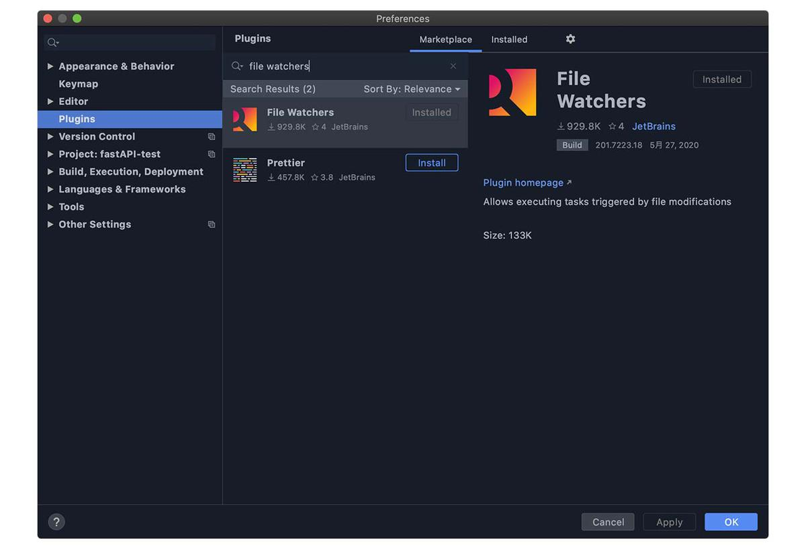
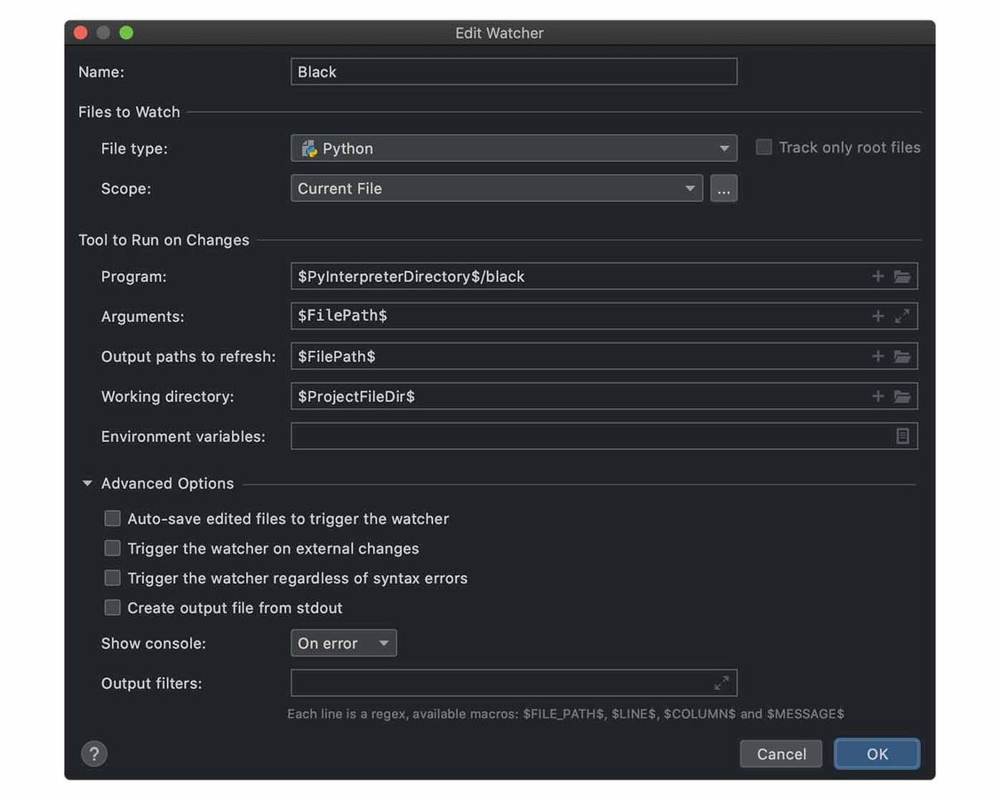

PyCharm できれいなコードを書くために以下のツールを設定しました。
PyCharm は標準設定でもコードチェックや整形をやってくれます。それに加え、各種ツールを活用してコーディングルールに沿った開発をしていくことが目的です。
本記事では、PyCharm にファイル監視機能をつけて、保存のたびにチェックする設定方法をまとめます。
【更新履歴】
20.6.28｜isort の設定を変更。multi_line_output に関する設定を削除。import を 1 行表示とするために force_single_line=true を追加。
20.5.27｜isort を追加。flake8 の設定を変更（ 1 行の文字数を 120 → 88 ）。
20.5.21｜flake8 などの設定を見直し
20.5.18｜公開
File Watchers プラグイン（ファイル監視機能）
まずはファイルを監視してくれるプラグインを導入します。
Preferences → Plugins → file watchersと検索して Go!!

インストールすると、Preferences → Tools にFile Watchersの項目が追加されます。ここに各種ツールの設定を書きます。
Black （コードフォーマッター）
Blackは Python3.6 以上で使える超強力なコードフォーマッターです。PEP8 に準拠しているのはもちろん、「より制限のきつい PEP8」と言われている存在。ユーザーからはほとんど設定変更ができないガッチガチ仕様。
▶︎ The uncompromising code formatter
記事投稿時点ではベータ版なので、今後仕様変更される可能性はあります。
■ 設定
Black の設定はpyproject.tomlを使用します。プロジェクト直下に生成し、1 行の文字数を 88 （ Black デフォルト）にしました。
[tool.black]
line-length = 88
PyCharm の File Watchers は以下のようにします。

| 項目 | 設定値 |
|---|---|
| Name | Black （任意名） |
| File type | Python |
| Scope | Current Fles or Project Files など |
| Program | $PyInterpreterDirectory$/black |
| Arguments | $FilePath$ |
| Output paths to refresh | $FilePath$ |
| Working directory | $ProjectFileDir$ |
| Auto-save edited files to trigger the watcher | off |
| Trigger the watcher on external changes | off |
black --helpやリファレンスを見ながら設定しました。
「Tool to Run on Changes」は、CUI でコマンド入力する状態を GUI から設定できるってイメージ。Black は標準でpyproject.tomlを読み込むので、引数は Python のファイルパスだけです。
■$xxxxxxxxxx$について
プロジェクトディレクトリなどを表すショートカットです。「Tool to Run on Changes」の各欄の「+」をクリックすると選択できます。
flake8 （静的文法チェックツール）
flake8は静的な文法チェックツール。以下をラッパーしており、使っていない変数のチェックなど、「これおかしいよー」という箇所を検出してくれます。
- PyFlakes
- pycodestyle
- Ned Batchelder’s McCabe script
■ 設定
設定ファイルは一元管理したいのでpyproject.tomlに書きます。1 行の文字数を Black に合わせたり、循環的複雑度を設定しました。
[flake8]
max-line-length = 88
max-complexity = 20
| 項目 | 設定値 |
|---|---|
| Name | flake8 （任意名） |
| File type | Python |
| Scope | Current Fles or Project Files など |
| Program | $PyInterpreterDirectory$/flake8 |
| Arguments | --statistics --config $ContentRoot$/pyproject.toml --ignore E203,W503,W504 $FilePath$ |
| Output paths to refresh | $FilePath$ |
| Working directory | $ProjectFileDir$ |
| Auto-save edited files to trigger the watcher | off |
| Trigger the watcher on external changes | off |
flake8 --helpやリファレンスを見ながら設定しました。
■ignore の指定について
flake8 で特定の警告やエラーを無効にしたい場合は、toml ファイルにこう書きます。
ignore = 'E203', 'W503', 'W504'
（ Black との衝突を防ぐコード）
しかし、なぜか PyCharm ではエラーとなります。toml にエラーがあると他のチェッカーが誤動作しますので、回避策として File Watchers で「--ignore」指定することにしました。（テープルの設定値参照）
isort （コードフォーマッター）
isortは import/from 部分を PEP8 に準じてソートしてくれるフォーマッターです。Black はそこまで整形してくれないんですよね。
■ 設定
こちらもpyproject.tomlに書きます。Black との衝突を防ぐために文字数を合わせます。multi_line_outputには複数行になる場合のソート方法を指定します。
[tool.isort]
line_length = 88
force_single_line = true
（20.6.28 以下削除）
#include_trailing_comma = true
#multi_line_output = 3
| 項目 | 設定値 |
|---|---|
| Name | isort （任意名） |
| File type | Python |
| Scope | Current Fles or Project Files など |
| Program | $PyInterpreterDirectory$/isort |
| Arguments | $FilePath$ |
| Output paths to refresh | $FilePath$ |
| Working directory | $ProjectFileDir$ |
| Auto-save edited files to trigger the watcher | off |
| Trigger the watcher on external changes | off |
isort --helpでいろいろ確認できます。
■ 導入時の注意点
isort を普通にインストールすると~/.isort.cfgを参照します。pyproject.tomlで一元管理するためにはpip install 'isort[pyproject]'とするか、PyCharm からならOptionsにpyporjectを指定すれば OK です。
mypy （静的型ヒントチェッカー）
mypyは静的な型ヒントチェッカーです。flake8 と同じようなもので「適切に型ヒントかけているかな？」という観点でみてくれます。
■ 設定
こちらもpyproject.tomlに書いちゃいます。
[mypy]
ignore_missing_imports = 1
| 項目 | 設定値 |
|---|---|
| Name | mypy （任意名） |
| File type | Python |
| Scope | Current Fles or Project Files など |
| Program | $PyInterpreterDirectory$/mypy |
| Arguments | --config-file $ContentRoot$/pyproject.toml $FilePath$ |
| Output paths to refresh | $FilePath$ |
| Working directory | $ProjectFileDir$ |
| Auto-save edited files to trigger the watcher | off |
| Trigger the watcher on external changes | off |
mypy --helpでいろいろ確認できます。
Pylint （静的文法チェックツール）
Pylintは静的な文法チェックツールです。flake8 と重複する部分もあるでしょうけど、両方採用して厳しめにチェックしてもいいだろうと。たとえば、flake8 と Pylint で引っ掛かったら、絶対に直すべきポイントだと思います。
■ 設定
Pylint もpyproject.tomlに設定できますが、.pylintrcに書くことにしました。pylint --generate-rcfileするとたくさんの標準設定があり、それらを有効にしておいた方が良いと考えたためです。
ただ、このままだと多くの変数にたいして「大文字にせぃ」とのたまってきます。変数は小文字が普通だと思うのですが（ですよね？）
というわけで、「名前について文句ゆーな」という設定や Black との衝突を防ぐための＋ α を.pylintrcに書き込みます。
// 設定ファイル生成
$ pylint --generate-rcfile > .pylintrc
$ vim .pylintrc
// [MESSAGES CONTROL]セクションの”disable=”に以下を追記
+ invalid-name
+ bad-continuation
// [FORMAT]セクションで1行当たりの文字数を他と揃える
- max-line-length=100
+ max-line-length=88
// [DESIGN]セクションで最低バブリックメソッド数を変更（必要に応じて）
- min-public-methods=2
+ min-public-methods=0 or 1
| 項目 | 設定値 |
|---|---|
| Name | pylint （任意名） |
| File type | Python |
| Scope | Current Fles or Project Files など |
| Program | $PyInterpreterDirectory$/pylint |
| Arguments | --rcfile $ContentRoot$/.pylintrc $FilePath$ |
| Output paths to refresh | $FilePath$ |
| Working directory | $ProjectFileDir$ |
| Auto-save edited files to trigger the watcher | off |
| Trigger the watcher on external changes | off |
■Pylint は基本的に無効
僕の環境では Pylint 処理にほんちょっと時間がかかります。保存のたびに「このちょっと」が気になるので、Pylint の自動処理を無効としておき、折を見て有効にしています。
有効・無効は File Watchers 設定画面のチェックボックス ON/OFF でできます。
しばらく使ってみたところ、ちょっとした時間はとくに気にならないため常に有効としました。（ 2020.5.21 ）
設定ファイルはエクスポートしておくと楽
これまで設定したものを他のプロジェクトに流用できるよう、設定ファイルのインポート／エクスポート機能があります。
File Watchers 設定画面の下部にある矢印アイコンがそれ。右上矢印がエクスポート、左下矢印がインポート。
pyproject.tomlや.pylintrcも一緒に保存しておくと非常に楽ですよ。
おわりに
Python の良い点に「コードの読みやすさ」があります。でも、PEP8 などのルールを無視して書いていたらその良さは活かせません。だから、この手のことは IT の力に任せちゃいましょう。
今回は PyCharm で設定しましたけど、Visual Studio Code でも同様の設定はできるので、自分の好きなエディタで開発を楽しんでいけばいいと思います。
参考にさせていただいた記事
ことの発端となった記事です。実務はこうなのか〜と知って「じゃあ、僕もやってみよう」となったのでした。
そのほかの参考記事はこちら。